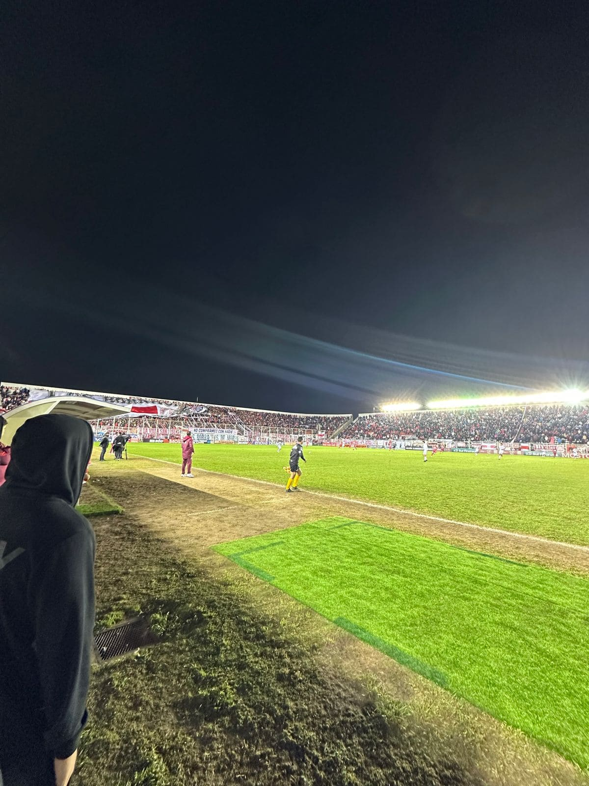
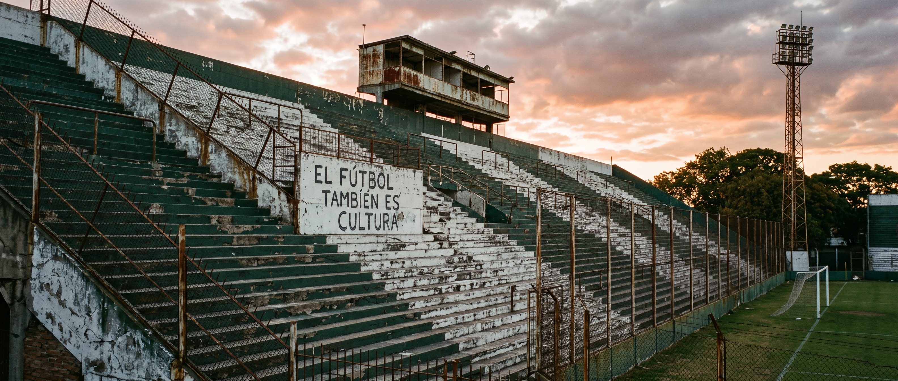
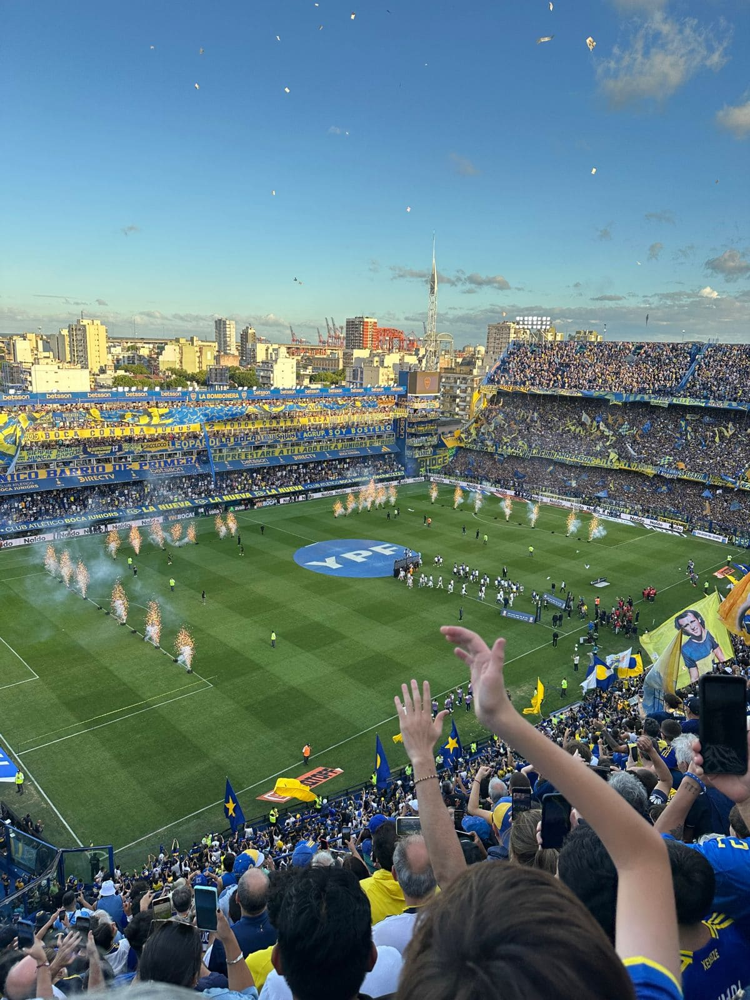
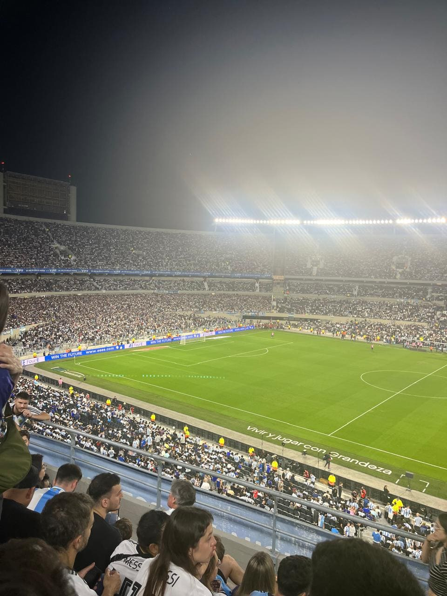
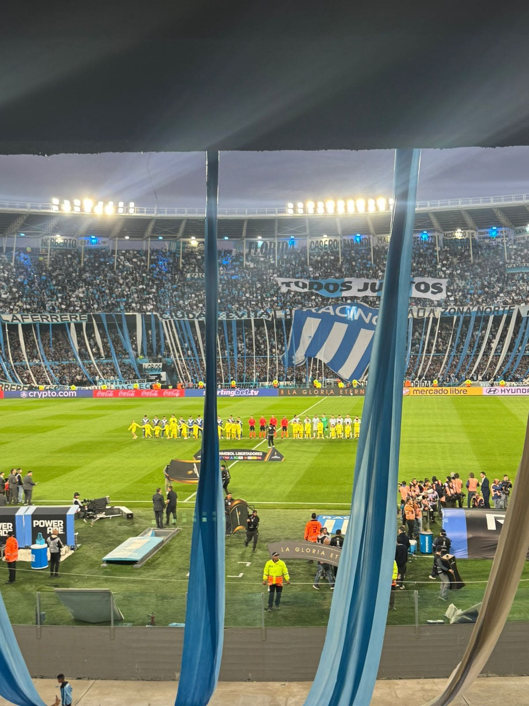

Cancha de moron
Una cancha con mucha historia y una identidad marcada por sus colores. Recorrer sus tribunas permite conocer de cerca la pasión que acompaña al club en cada partido.


Este sitio nace de una pasión: conocer y recorrer diferentes canchas de fútbol argentino. Cada
estadio
tiene una identidad propia, marcada por su historia, su barrio, sus colores y, sobre todo, por la
gente
que lo acompaña.
“Canchas que conocí” es un recorrido personal por algunas de las canchas que tuve la oportunidad de
visitar. En cada una busco compartir una pequeña parte de su historia, mostrar sus tribunas y
guardar un
registro de la experiencia de haber estado ahí.
Porque una cancha es mucho más que un lugar donde se juega al fútbol. Es el punto de encuentro de
miles
de personas, un espacio lleno de recuerdos, emociones y momentos que quedan para siempre. Cada
cancha
tiene algo que contar, y este es mi recorrido por ellas.
Estudiante: Joaquin marletto
Una cancha con mucha historia y una identidad marcada por sus colores. Recorrer sus tribunas permite conocer de cerca la pasión que acompaña al club en cada partido.

Uno de los estadios más reconocidos del fútbol argentino. Sus tribunas, sus colores y el ambiente que se vive hacen que cada visita sea una experiencia difícil de olvidar.

Un estadio imponente que representa una parte importante de la historia del fútbol mundial. Su tamaño, sus tribunas y la cantidad de gente generan una experiencia única.

Una cancha donde la pasión se siente en cada rincón. Sus tribunas, sus colores y el acompañamiento de los hinchas reflejan la enorme identidad que tiene el club.
